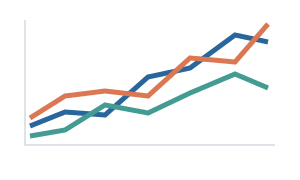

Turn a figure you love into a palette you can use. From a paper, image or screenshot to your next plot.
Made for the way researchers work.
PowerPointOriginHEX & RGB
Main colors, shades and continuous gradients. No account or API key needed.
Your color workspace
Start with a reference. Leave with a toolkit.
Reference canvasYour figure will appear here

Every good palette starts somewhere.
Bring a figure. Pick the colors. Make them yours.
Original example illustration
Palette ready
Your main colors
Click a swatch to edit. Every shade, preview and export updates with it.
Need a continuous scale?
A spectrum for every color
Light to dark, with your main color at the exact midpoint. Click a sample to copy its HEX value.
Derived from your palette
Sequential
For a quantity that goes from low to high.
Low / lightHigh / dark
Diverging
For differences around a meaningful center.
LowCenterHigh
See the colors at work
Illustrative data. Review the palette at your final figure size.
Lines & markers
Readability checks
Contrast against white
Review targets: 3:1 for graphical elements, 4.5:1 for ordinary text. These checks do not certify an entire figure.
Series separation
Grayscale is not a simulation of color vision deficiency. Add markers, line styles and labels; no colorblind-safe guarantee is made.
Take the palette into your work
Editable files. Ready for your next presentation or figure.
PPTX / THMX
PowerPoint
Editable swatches and native gradient shapes. A matching theme for your slides.
How to use in PowerPoint
Open the toolkit and copy a swatch or gradient. Use Format Painter to transfer fills. Apply the theme with Design → Themes → Browse for Themes. Office has six accent slots; all main colors remain in the toolkit.
PAL
Origin
Main colors for categorical series, plus 256-color scales for continuous data.
How to import into Origin
Tools → Color Manager → Import from Files. Import main-colors.pal for series colors or a continuous .pal for colormaps. Set data limits and the diverging midpoint in Origin; PAL files contain RGB values only.
PNG / SVG / CSV
Color cards & values
Share a color card, keep a vector copy, or bring the exact values into any tool.
The complete kit also includes provenance, gradient SVG files and readability diagnostics.
From a reference to a reusable palette.
A small part of your workflow. A better starting point for every figure.
1
Find your reference
Upload a paper or image, or paste a screenshot. Pick a page and crop to the figure you want.
2
Make the colors yours
Extract the main colors. Adjust a swatch and explore its shades, gradients and figure previews.
3
Keep making discoveries
Take editable PowerPoint tools, Origin presets and color cards into the work you already do.